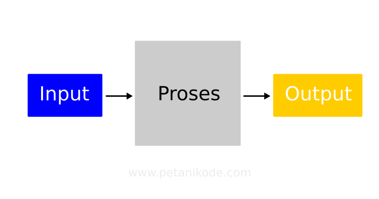
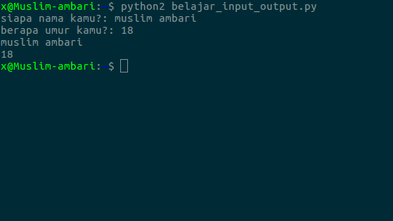
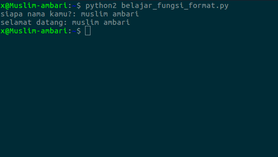
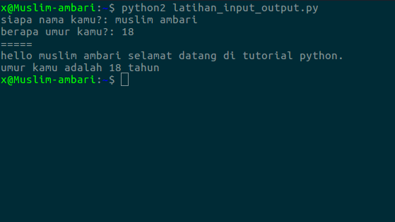

mengambil input dan menghasilkan output
skrg kita akan belajar bagaimana cara mengambil input dan menghasilkan output di python.
sebelumnya saya akan jelaskan, apa itu input? input adalah masukan yang kita berikan kepada program sedangkan output adalah hasil yang kita ambil dari input tersebut

mengambil input dari keyboard
python sudah menyediakan fungsi raw_input dan input
untuk mengambil inputan dari keyboard.
lalu apa bedanya dari kedua fungsi tersebut?, kita bahas semuanya fungsi raw_input digunakan untuk
mengambil inputan dari keyboard yang ber type data text (string), sedangkan fungsi input digunakan untuk mengambil inputan dari keyboard yang ber type data angka (integer)
Contoh penggunaan:
nama = raw_input("siapa nama kamu?: ")
umur = input("berapa umur kamu?: ")
yang artinya hasil inputan untuk nama akan disimpan kedalam variabel nama
sedangkan untuk inputan umur akan disimpan kedalam variabel umur biar lebih jelas silahkan buat file baru bernama belajar_input_output.py dan ikuti kode berikut:
# mengambil input
nama = raw_input("siapa nama kamu?: ")
umur = input("berapa umur kamu?: ")
# menampilkan output
print nama
print umur
Hasilnya

menggunakan fungsi format()
fungsi format() untuk menggabungkan variabel dengan text.
biar lebih jelas mari kita coba.
silahkan modifikasi file yang tadi dibuat, sehingga menjadi seperti ini
nama = raw_input("siapa nama kamu?: ")
print "selamat datang: {}".format(nama)
Hasilnya

menggunakan cara lama
menggabungkan variabel dengan text menggunakan cara lama dengan simbol persen (%) Contoh:
nama = raw_input("siapa nama kamu?: ")
print "selamat datang: %s" % nama
tanda %s otomatis akan diganti dengan nilai yang kita inputkan kedalam variabel nama.
biar lebih mantap mari kita latihan lagi. buat file baru bernama latihan_input_output.py dan ikuti kode berikut:
nama = raw_input("siapa nama kamu?: ")
umur = input("berapa umur kamu?: ")
print "="*5
print "hello %s selamat datang di tutorial python." % nama
print "umur kamu adalah %d tahun" % umur
Hasilnya

mengapa ada tanda %d dan %s disitu?, lalu apa bedanya?
tanda %d digunakan untuk menampilkan type data angka(integer), dan untuk tanda %s
digunakan untuk menampilkan type data text(string). sekian pelajaran tentang input dan output, semoga sudah paham
dan silahkan pelajari tutorial selanjutnya.
Lanjut